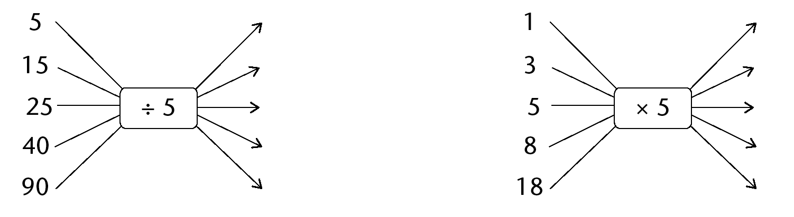
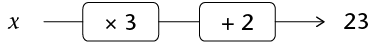

Algebraic equations
In this chapter you will solve equations by applying inverse operations. You will also solve equations that contain exponents.
Thinking forwards and backwards
Doing and undoing what has been done
- Complete the flow diagram by
finding the output values.

- . Complete the table.
x
-3
-2
0
5
17
2x
- Evaluate \(4x\) if:
- \(x = -7\)
- \( x = 10\)
- \( x = 0\)
- \(x = -7\)
-
- Complete the flow diagram by finding
the input values.

- Puleng put another integer into the flow
diagram and got -68 as an answer. Which integer did she put in?
Show your calculation.
- Explain how you worked to find the input
numbers when you did question (a).
- Complete the flow diagram by finding
the input values.
-
- Complete the table.
x
\(5x\)
5
15
25
40
90
- Complete the flow diagrams.

- Explain how you completed the table.
- Complete the table.
One of the things we do in algebra is to evaluate expressions. When we evaluate expressions we replace a variable in the expression with an input number to obtain the value of the expression called the output number. We will think of this process as a doing process.
However ,in other cases we may need to undo what was done. When we know what output number was obtained but do not know what input number was used, we have to undo what was done in evaluating the expression. In such a case we say we are solving an equation.
- Look again at
questions 1 to 5. For each question, say whether the question
required a doing or an undoing process. Give an explanation for
your answer (for example: input to output).
-
- Complete the flow diagrams below.

- What do you observe?
- Complete the flow diagrams below.
-
- Complete the flow diagrams below.
- What do you observe?
- Complete the flow diagrams below.
-
- Complete the flow diagrams below.
- What do you observe?
- Complete the flow diagrams below.
-
- Complete the flow diagram below.
- What calculations will you do to
determine what the input number was when the output number is
20?
- Complete the flow diagram below.
Solve the following problems by undoing what was done to get the answer:
- When a certain number is
multiplied by 10 the answer is 150. What is the number?
- When a certain number is
divided by 5 the answer is 1. What is the number?
- When 23 is added to a
certain number the answer is 107. What is the original
number?
- When a certain number is multiplied by 5 and 2 is subtracted
from the answer, the final answer is 13. What is the original
number?
Moving from the output value to the input value is called solving the equation for the unknown.
Solving equations using the additive and multiplicative inverses
Finding the unknown
Consider the equation \(3x + 2 = 23\).
We can represent the equation \(3x + 2 = 23\) in a flow diagram, where x represents an unknown number:

When you reverse the process in the flow diagram, you start with the output number 23, then subtract 2 and then divide the answer by 3:

We can write all of the above reverse process as follows:
Subtract 2 from both sides of the equation:
\( \begin{align} 3x + 2 - 2 &= 23 - 2 \\ 3x &= 21 \\ \text{Divide both sides by 3}: \\ \frac{3x}{3} &= \frac{21}{3} \\ x&=7 \end{align}\)
We say \(x = 7\) is the solution of \(3x + 2 = 23\) because \(3 \times 7 + 2 = 23\). We say that \(x = 7\) makes the equation \(3x + 2 = 23\) true.
The numbers +2 and -2 are additive inverses of each other. When we add a number and its additive inverse we always get 0.
The numbers \(3\) and \(\frac{1}{3}\)are multiplicative inverses of each other. When we multiply a number and its multiplicative inverse we always get \(1\), so \(3 \times \frac{1}{3} = 1\)
The additive and multiplicative inverses help us to isolate the unknown value or the input value.
Also remember:
- The multiplicative property of 1: the product of any number and 1 is that number.
- The additive property of 0: the sum of any number and 0 is that number.
Solve the equations below by using the additive and multiplicative inverses. Check your answers.
- \(x + 10 = 0\)
- \(49x + 2 = 100\)
- \(2x = 1\)
- \(20 = 11 - 9x\)
In some cases you need to collect like terms before you can solve the equations using additive and multiplicative inverses, as in the example below:
\(7x\) and \(3x\) are like terms and can be replaced with one equivalentexpression \((7+3)x = 10x\)
\( \begin{align} {\bf\text{Example:}}\text{ Solve for x: } 7x + 3x &= 10 \\ 10x &= 10 \\ \frac{10x}{10} &= \frac{10}{10} \\ x &= 1\end{align}\)
- \(4x + 6x = 20\)
- \( 5x = 40 + 3x\)
- \( 3x + 1 - x = 0\)
- \(x + 20 + 4x = -55\)
Solving equations involving powers
Solving an exponential equation is the same as asking the question: To what exponent must the base be raised in order to make the equation true?
- Complete the table.
\(x\)
1
3
5
7
\(2^x\)
- Complete the table.
\(x\)
2
5
\(3^x\)
1
27
Karina solved the equation \(3x = 27\) as follows:
\( \begin{align} 3^x &= 27 \\ \text{Hence } 3^3 &= 3^3 \\ \text{Hence } x &= 3 \end{align}\)
The number \(27\) can be expressed as \(3^3\) because \(3^3 = 27\).
- Now use Karina's method and
solve for x in each of the following:
- \(2^x = 32\)
- \(4^x = 16\)
- \(6^x = 216\)
- \(5^{x + 1} = 125\)
- \(2^x = 32\)